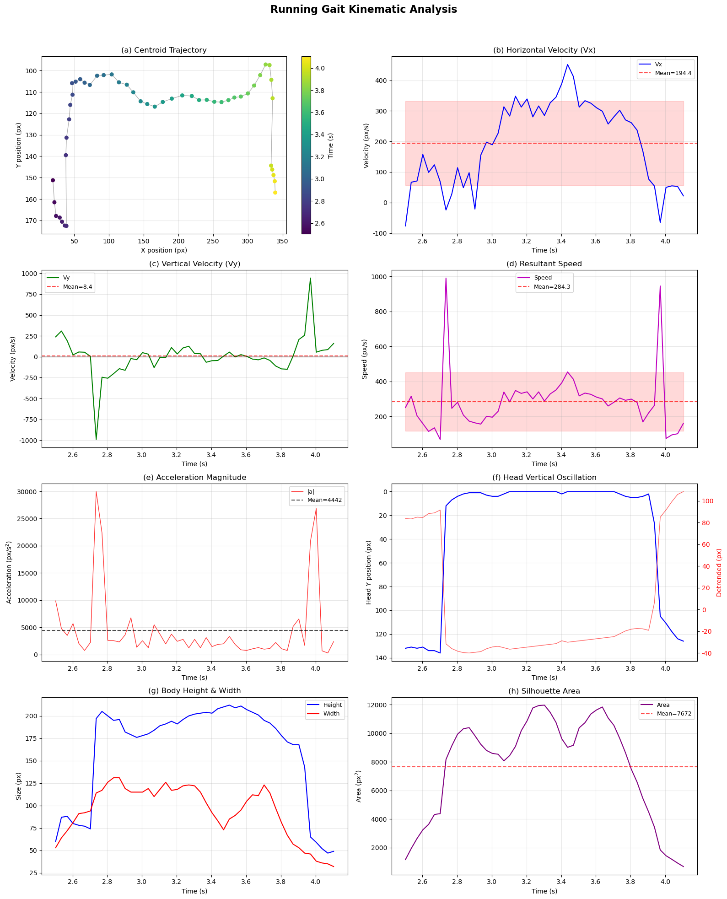
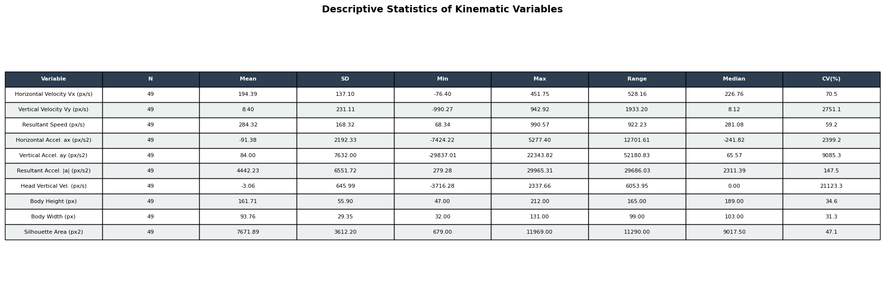

22장 운동학 (Kinematics)#
러닝 영상 업로드 & 운동학적 분석#
Video(”https://cdn.jsdelivr.net/gh/pilsunchoi/images4@main/22-1.mp4”)
출처: CMU Motion Capture Database, 35-17.mpg
Claude 분석 보고서#
Running Gait Kinematic Analysis Report
영상 파일: 22-1.mp4
분석 방법: Background Subtraction + Contour Analysis (실루엣 기반 추적)
1. 분석 개요 (Analysis Overview)#
본 보고서는 실내 실험실 환경에서 촬영된 달리기 동작 영상(22-1.mp4)을 대상으로, 컴퓨터 비전 기반 실루엣 추적을 적용하여 핵심 운동학(kinematics) 변수를 추출하고 기초 기술통계량을 산출한 결과입니다.
영상 사양#
항목 |
값 |
|---|---|
해상도 |
352 × 240 px |
프레임레이트 |
29.97 fps |
총 프레임 수 |
189 |
총 영상 길이 |
6.31초 |
인체 탐지 프레임 |
51 / 189 (frame 73 ~ 123) |
유효 분석 시간 |
2.436초 ~ 4.104초 (약 1.67초) |
통계 산출 유효 N |
49 (1차 미분 결측 제외) |
2. 추출된 핵심 운동학 변수#
다음 10개의 운동학 변수를 프레임 단위(Δt ≈ 0.0334초)로 산출하였습니다.
변위·속도 변수 (Displacement & Velocity)#
변수 |
기호 |
산출 방법 |
|---|---|---|
수평 속도 |
Vx |
무게중심 X좌표의 1차 미분 (Δx / Δt) |
수직 속도 |
Vy |
무게중심 Y좌표의 1차 미분 (Δy / Δt) |
합성 속력 |
Speed |
√(Vx² + Vy²) |
머리 수직 속도 |
Head Vy |
머리(최상단점) Y좌표의 1차 미분 |
가속도 변수 (Acceleration)#
변수 |
기호 |
산출 방법 |
|---|---|---|
수평 가속도 |
ax |
Vx의 1차 미분 (ΔVx / Δt) |
수직 가속도 |
ay |
Vy의 1차 미분 (ΔVy / Δt) |
합성 가속도 |
|a| |
√(ax² + ay²) |
형태 변수 (Body Morphology)#
변수 |
기호 |
산출 방법 |
|---|---|---|
신체 높이 |
Body Height |
실루엣 최상단~최하단 수직 거리 (px) |
신체 너비 |
Body Width |
실루엣 최좌측~최우측 수평 거리 (px) |
실루엣 면적 |
Area |
최대 윤곽(contour)의 면적 (px²) |
3. 기초 기술통계량 (Descriptive Statistics)#
유효 프레임(N = 49)에 대해 산출한 기술통계량입니다.
변수 |
N |
평균 (Mean) |
표준편차 (SD) |
최솟값 (Min) |
최댓값 (Max) |
범위 (Range) |
중앙값 (Median) |
변동계수 CV(%) |
|---|---|---|---|---|---|---|---|---|
수평 속도 Vx (px/s) |
49 |
194.39 |
137.10 |
−76.40 |
451.75 |
528.16 |
226.76 |
70.5 |
수직 속도 Vy (px/s) |
49 |
8.40 |
231.11 |
−990.27 |
942.92 |
1,933.20 |
8.12 |
2,751.1 |
합성 속력 (px/s) |
49 |
284.32 |
168.32 |
68.34 |
990.57 |
922.23 |
281.08 |
59.2 |
수평 가속도 ax (px/s²) |
49 |
−91.38 |
2,192.33 |
−7,424.22 |
5,277.40 |
12,701.61 |
−241.82 |
2,399.2 |
수직 가속도 ay (px/s²) |
49 |
84.00 |
7,632.00 |
−29,837.01 |
22,343.82 |
52,180.83 |
65.57 |
9,085.3 |
합성 가속도 |a| (px/s²) |
49 |
4,442.23 |
6,551.72 |
279.28 |
29,965.31 |
29,686.03 |
2,311.39 |
147.5 |
머리 수직속도 (px/s) |
49 |
−3.06 |
645.99 |
−3,716.28 |
2,337.66 |
6,053.95 |
0.00 |
21,123.3 |
신체 높이 (px) |
49 |
161.71 |
55.90 |
47.00 |
212.00 |
165.00 |
189.00 |
34.6 |
신체 너비 (px) |
49 |
93.76 |
29.35 |
32.00 |
131.00 |
99.00 |
103.00 |
31.3 |
실루엣 면적 (px²) |
49 |
7,671.89 |
3,612.20 |
679.00 |
11,969.00 |
11,290.00 |
9,017.50 |
47.1 |
4. 전체 이동 요약 (Global Movement Summary)#
항목 |
값 |
|---|---|
이동 방향 |
우 → 좌 (화면 기준 좌→우, 수평 변위 +323.5 px) |
총 수직 변위 |
+14.5 px (미미) |
총 이동 시간 |
1.668초 |
평균 이동 속력 |
194.1 px/s |
수직 진동 피크 수 |
5회 |
수직 진동 골 수 |
5회 |
피크 간 평균 간격 (보폭 주기) |
0.309초 / stride |
추정 보폭 빈도 |
≈ 3.2 strides/s |
5. 결과 해석 (Interpretation)#

5.1 수평 속도 (Horizontal Velocity)#
수평 속도의 평균은 194.39 px/s(SD = 137.10)로, 변동계수(CV)가 70.5%에 달합니다. 이는 피험자가 화면에 진입·진출하는 과정에서 가·감속이 크게 나타났음을 의미합니다. 중앙값(226.76)이 평균보다 높아 분포가 좌측 편향(negatively skewed)되어 있으며, 이는 진입·퇴출 시 저속 구간의 영향입니다. 안정 구간(3.0~3.8초)에서는 비교적 일정한 수평 속도를 유지하여 등속 달리기(steady-state running) 에 근접함을 시사합니다.
5.2 수직 속도 (Vertical Velocity)#
수직 속도의 평균이 8.40 px/s로 거의 0에 가까우나, SD가 231.11로 극도로 크며 CV가 2,751.1%입니다. 이는 달리기 시 상하 방향으로 강한 주기적 진동(oscillation) 이 발생하고 있음을 나타냅니다. 양·음의 수직 속도가 번갈아 나타나면서 평균은 상쇄되지만 편차가 매우 큰, 전형적인 보행/주행 패턴입니다. Min(−990.27)과 Max(942.92)의 대칭적 범위는 상승기(이륙/비행)와 하강기(착지)가 유사한 크기로 반복됨을 보여줍니다.
5.3 합성 속력 (Resultant Speed)#
합성 속력의 평균은 284.32 px/s(SD = 168.32, CV = 59.2%)이며, 수평 속도보다 높은 것은 수직 성분의 기여 때문입니다. 중앙값(281.08)과 평균이 거의 같아 비교적 대칭적 분포를 보입니다. 최댓값(990.57)은 수직 방향 급격한 움직임(착지 충격 등)에서 발생한 것으로, 순간 최대 속력이 평균의 약 3.5배에 달합니다.
5.4 가속도 (Acceleration)#
합성 가속도의 평균은 4,442.23 px/s²이며, 수직 가속도의 SD(7,632)가 수평 가속도의 SD(2,192)보다 약 3.5배 큽니다. 이는 달리기 중 착지·이륙 시 수직 방향의 충격 가속도가 수평 방향보다 훨씬 크다는 점을 반영합니다. 수직 가속도의 극단값(Min = −29,837, Max = 22,344)은 착지 순간의 강한 감속(음) 및 이륙 시의 가속(양)으로 해석할 수 있으며, 이는 지면반력(GRF)의 수직 성분 패턴과 일치합니다.
5.5 머리 수직 진동 & 보행 주기 (Head Oscillation & Gait Cycle)#
머리 수직 위치의 시계열에서 5개의 피크와 5개의 골이 관찰되었습니다. 피크 간 평균 간격은 0.309초로, 이는 약 3.2 strides/s의 보폭 빈도를 의미합니다. 일반적으로 달리기의 보폭 빈도가 2.5-4.0 strides/s인 점을 고려하면, 본 피험자는 보통~빠른 속도의 달리기를 수행한 것으로 추정됩니다. 수직 진동의 detrended 패턴에서 약 ±20-30 px의 규칙적 진동이 확인되며, 이는 달리기 특유의 비행기(flight phase)와 지지기(stance phase) 교대를 반영합니다.
5.6 신체 형태 변수 (Body Morphology)#
신체 높이(Mean = 161.71 px, CV = 34.6%)와 너비(Mean = 93.76 px, CV = 31.3%)의 변동은 주로 두 가지 요인에 기인합니다. 첫째, 화면 진입·퇴출 시 부분적으로만 보이는 실루엣이 높이·너비를 감소시킵니다. 둘째, 달리기 사이클 내에서 사지의 개폐에 따라 실루엣 형태가 주기적으로 변합니다(높이는 지지기에 최대, 비행기에 감소 경향). 실루엣 면적(Mean = 7,672 px², CV = 47.1%)도 유사한 패턴을 따르며, 안정 구간에서 약 9,000~12,000 px²의 비교적 일관된 값을 보입니다.
6. 분석 한계 및 제언 (Limitations & Recommendations)#
픽셀 단위 분석: 공간 캘리브레이션(알려진 거리 기준점) 없이 픽셀 단위로 산출되었으므로, m/s나 m/s² 등 절대 물리단위로의 환산이 불가합니다. 향후 캘리브레이션 마커를 활용하면 실제 속도·가속도 산출이 가능합니다.
2D 분석: 단일 카메라의 2D 영상이므로 깊이 방향(z축) 움직임은 반영되지 않습니다. 3D 운동학 분석에는 다시점 촬영이나 깊이 센서가 필요합니다.
실루엣 기반 추적: 관절 위치가 아닌 전체 실루엣의 무게중심·윤곽을 추적하였으므로, 관절각(knee angle, hip angle 등), 보폭 길이(stride length) 등 세부 운동학 변수는 포함되지 않습니다. Pose Estimation 모델 적용 시 보다 정밀한 분석이 가능합니다.
저해상도 영상: 352×240 해상도에서 프레임 간 1~2 px의 미세 움직임이 양자화 오차로 나타날 수 있으며, 이것이 가속도 변수의 높은 변동에 일부 기여했을 수 있습니다.
짧은 유효 구간: 전체 6.31초 중 인체가 탐지된 구간은 약 1.67초에 불과하여, 보행 주기 추정의 통계적 안정성이 제한적입니다. 보다 긴 촬영 구간이 확보되면 주기 분석의 신뢰도가 향상됩니다.
참고: 파이썬 코드#
"""
=============================================================
달리기 동작 운동학 분석
- 방법: 배경 차분(Background Subtraction) + 윤곽 분석(Contour Analysis)
- 산출: 핵심 운동학 변수 추출 → 기초 기술통계 → 시각화
=============================================================
"""
import cv2
import numpy as np
import pandas as pd
import matplotlib.pyplot as plt
import matplotlib
from scipy.signal import detrend, find_peaks
matplotlib.rcParams['font.family'] = 'DejaVu Sans'
matplotlib.rcParams['axes.unicode_minus'] = False
# =============================================================
# ★ 영상 파일 경로 (본인 환경에 맞게 수정)
# =============================================================
VIDEO_PATH = '../Data/22-1.mp4'
# =============================================================
# PART 1. 영상 로드 및 기본 정보 확인
# =============================================================
cap = cv2.VideoCapture(VIDEO_PATH)
fps = cap.get(cv2.CAP_PROP_FPS) # 프레임레이트
width = int(cap.get(cv2.CAP_PROP_FRAME_WIDTH)) # 가로 해상도
height = int(cap.get(cv2.CAP_PROP_FRAME_HEIGHT)) # 세로 해상도
total_frames = int(cap.get(cv2.CAP_PROP_FRAME_COUNT)) # 총 프레임 수
dt = 1.0 / fps # 프레임 간 시간 간격
print(f"FPS: {fps:.2f}, Resolution: {width}x{height}, "
f"Total frames: {total_frames}, Duration: {total_frames/fps:.2f}s")
cap.release()
# =============================================================
# PART 2. 배경 차분으로 인체 실루엣 추적
# =============================================================
# MOG2 배경 차분기 초기화
bg_sub = cv2.createBackgroundSubtractorMOG2(
history=30, varThreshold=50, detectShadows=False
)
# 1차 패스: 처음 30프레임으로 배경 모델 학습
cap_bg = cv2.VideoCapture(VIDEO_PATH)
for i in range(min(30, total_frames)):
ret, frame = cap_bg.read()
if not ret:
break
bg_sub.apply(frame)
cap_bg.release()
# 2차 패스: 전체 프레임에서 인체 탐지 및 특징점 추출
cap = cv2.VideoCapture(VIDEO_PATH)
kernel = cv2.getStructuringElement(cv2.MORPH_ELLIPSE, (5, 5)) # 형태학 연산 커널
all_data = []
for frame_idx in range(total_frames):
ret, frame = cap.read()
if not ret:
break
# 전경 마스크 생성 및 노이즈 제거
fg_mask = bg_sub.apply(frame, learningRate=0.001)
fg_mask = cv2.morphologyEx(fg_mask, cv2.MORPH_OPEN, kernel) # 열기 연산 (노이즈 제거)
fg_mask = cv2.morphologyEx(fg_mask, cv2.MORPH_CLOSE, kernel) # 닫기 연산 (구멍 메우기)
fg_mask = cv2.dilate(fg_mask, kernel, iterations=2) # 팽창 (연결 강화)
# 윤곽선 검출
contours, _ = cv2.findContours(
fg_mask, cv2.RETR_EXTERNAL, cv2.CHAIN_APPROX_SIMPLE
)
row = {'frame': frame_idx, 'time': frame_idx * dt}
if contours:
largest = max(contours, key=cv2.contourArea) # 가장 큰 윤곽 = 인체
area = cv2.contourArea(largest)
if area > 500: # 최소 면적 임계값
x, y, w, h = cv2.boundingRect(largest) # 바운딩 박스
# 무게중심(centroid) 계산
M = cv2.moments(largest)
if M['m00'] > 0:
cx = M['m10'] / M['m00']
cy = M['m01'] / M['m00']
else:
cx, cy = x + w / 2, y + h / 2
# 극단점 추출 (머리/발/좌/우)
topmost = tuple(largest[largest[:, :, 1].argmin()][0]) # 최상단 → 머리
bottommost = tuple(largest[largest[:, :, 1].argmax()][0]) # 최하단 → 발
leftmost = tuple(largest[largest[:, :, 0].argmin()][0]) # 최좌측
rightmost = tuple(largest[largest[:, :, 0].argmax()][0]) # 최우측
row.update({
'detected': True,
'bbox_x': x, 'bbox_y': y, 'bbox_w': w, 'bbox_h': h,
'centroid_x': cx, 'centroid_y': cy,
'area': area,
'head_x': topmost[0], 'head_y': topmost[1],
'foot_x': bottommost[0], 'foot_y': bottommost[1],
'left_x': leftmost[0], 'right_x': rightmost[0],
'body_height': bottommost[1] - topmost[1], # 신체 높이
'body_width': rightmost[0] - leftmost[0], # 신체 너비
})
else:
row['detected'] = False
else:
row['detected'] = False
all_data.append(row)
cap.release()
# =============================================================
# PART 3. 운동학 변수 산출
# =============================================================
df = pd.DataFrame(all_data)
detected = df[df['detected'] == True].copy()
print(f"\nPerson detected in {len(detected)} / {len(df)} frames")
print(f"Detection range: frame {detected['frame'].min()} to {detected['frame'].max()}")
print(f"Time range: {detected['time'].min():.3f}s to {detected['time'].max():.3f}s")
# 변위 (프레임 간 위치 변화)
detected['disp_x'] = detected['centroid_x'].diff()
detected['disp_y'] = detected['centroid_y'].diff()
# 속도 (변위 / 시간간격, px/s)
detected['vel_x'] = detected['disp_x'] / dt # 수평 속도
detected['vel_y'] = detected['disp_y'] / dt # 수직 속도
detected['speed'] = np.sqrt(detected['vel_x']**2 + detected['vel_y']**2) # 합성 속력
# 가속도 (속도의 1차 미분, px/s²)
detected['acc_x'] = detected['vel_x'].diff() / dt # 수평 가속도
detected['acc_y'] = detected['vel_y'].diff() / dt # 수직 가속도
detected['acc_mag'] = np.sqrt(detected['acc_x']**2 + detected['acc_y']**2) # 합성 가속도
# 머리 수직 진동 (보행 주기 분석용)
detected['head_disp_y'] = detected['head_y'].diff()
detected['head_vel_y'] = detected['head_disp_y'] / dt
# 신체 형태 변화량
detected['body_width_change'] = detected['body_width'].diff()
detected['height_change'] = detected['body_height'].diff()
# =============================================================
# PART 4. 기초 기술통계량 산출
# =============================================================
# 1~2차 미분으로 인한 첫 프레임 NaN 제거
valid = detected.dropna(subset=['vel_x', 'acc_x']).copy()
# 분석 대상 운동학 변수 목록
kinematic_vars = {
'Horizontal Velocity Vx (px/s)': valid['vel_x'],
'Vertical Velocity Vy (px/s)': valid['vel_y'],
'Resultant Speed (px/s)': valid['speed'],
'Horizontal Accel. ax (px/s2)': valid['acc_x'],
'Vertical Accel. ay (px/s2)': valid['acc_y'],
'Resultant Accel. |a| (px/s2)': valid['acc_mag'],
'Head Vertical Vel. (px/s)': valid['head_vel_y'].dropna(),
'Body Height (px)': valid['body_height'],
'Body Width (px)': valid['body_width'],
'Silhouette Area (px2)': valid['area'],
}
# 변수별 기술통계량 계산 (평균, SD, 최솟값, 최댓값, 범위, 중앙값, 변동계수)
stats_rows = []
for name, series in kinematic_vars.items():
s = series.dropna()
stats_rows.append({
'Variable': name,
'N': len(s),
'Mean': f"{s.mean():.2f}",
'SD': f"{s.std():.2f}",
'Min': f"{s.min():.2f}",
'Max': f"{s.max():.2f}",
'Range': f"{s.max() - s.min():.2f}",
'Median': f"{s.median():.2f}",
'CV(%)': (
f"{(s.std() / abs(s.mean()) * 100):.1f}"
if abs(s.mean()) > 0.01 else "N/A"
),
})
stats_df = pd.DataFrame(stats_rows)
print("\n===== Descriptive Statistics =====\n")
print(stats_df.to_string(index=False))
# --- 전체 이동 요약 ---
total_disp_x = detected['centroid_x'].iloc[-1] - detected['centroid_x'].iloc[0] # 총 수평 변위
total_disp_y = detected['centroid_y'].iloc[-1] - detected['centroid_y'].iloc[0] # 총 수직 변위
total_time = detected['time'].iloc[-1] - detected['time'].iloc[0] # 총 이동 시간
avg_speed = np.sqrt(total_disp_x**2 + total_disp_y**2) / total_time # 평균 속력
print(f"\n===== Global Movement Summary =====")
print(f"Total horizontal displacement: {total_disp_x:.1f} px "
f"({'L to R' if total_disp_x > 0 else 'R to L'})")
print(f"Total vertical displacement: {total_disp_y:.1f} px")
print(f"Total movement time: {total_time:.3f} s")
print(f"Average speed: {avg_speed:.1f} px/s")
# --- 보행 주기 분석 (머리 수직 진동 기반) ---
head_y = valid['head_y'].values
if len(head_y) > 5:
peaks, _ = find_peaks(head_y, distance=3) # 수직 진동 피크
valleys, _ = find_peaks(-head_y, distance=3) # 수직 진동 골
print(f"\n===== Gait Cycle Analysis (Head Vertical Oscillation) =====")
print(f"Number of peaks: {len(peaks)}")
print(f"Number of valleys: {len(valleys)}")
if len(peaks) >= 2:
peak_intervals = np.diff(valid['time'].iloc[peaks].values) # 피크 간 시간 간격
print(f"Mean peak interval (stride period): "
f"{np.mean(peak_intervals):.3f} s")
print(f"Estimated stride frequency: "
f"{1 / np.mean(peak_intervals):.1f} strides/s")
# =============================================================
# PART 5. 시각화 (화면 출력만, 파일 저장 없음)
# =============================================================
t = valid['time'].values
fig, axes = plt.subplots(4, 2, figsize=(16, 20))
fig.suptitle('Running Gait Kinematic Analysis',
fontsize=16, fontweight='bold', y=0.98)
# (a) 무게중심 궤적
ax = axes[0, 0]
sc = ax.scatter(valid['centroid_x'], valid['centroid_y'],
c=valid['time'], cmap='viridis', s=30, zorder=3)
ax.plot(valid['centroid_x'], valid['centroid_y'], 'k-', alpha=0.3, linewidth=1)
ax.set_xlabel('X position (px)')
ax.set_ylabel('Y position (px)')
ax.set_title('(a) Centroid Trajectory')
ax.invert_yaxis()
plt.colorbar(sc, ax=ax, label='Time (s)')
ax.grid(True, alpha=0.3)
# (b) 수평 속도
ax = axes[0, 1]
ax.plot(t, valid['vel_x'], 'b-', linewidth=1.5, label='Vx')
ax.axhline(valid['vel_x'].mean(), color='r', linestyle='--', alpha=0.7,
label=f'Mean={valid["vel_x"].mean():.1f}')
ax.fill_between(t,
valid['vel_x'].mean() - valid['vel_x'].std(),
valid['vel_x'].mean() + valid['vel_x'].std(),
alpha=0.15, color='r') # 평균 ± 1SD 범위
ax.set_xlabel('Time (s)')
ax.set_ylabel('Velocity (px/s)')
ax.set_title('(b) Horizontal Velocity (Vx)')
ax.legend(fontsize=9)
ax.grid(True, alpha=0.3)
# (c) 수직 속도
ax = axes[1, 0]
ax.plot(t, valid['vel_y'], 'g-', linewidth=1.5, label='Vy')
ax.axhline(0, color='k', linestyle='-', alpha=0.3) # 영점 기준선
ax.axhline(valid['vel_y'].mean(), color='r', linestyle='--', alpha=0.7,
label=f'Mean={valid["vel_y"].mean():.1f}')
ax.set_xlabel('Time (s)')
ax.set_ylabel('Velocity (px/s)')
ax.set_title('(c) Vertical Velocity (Vy)')
ax.legend(fontsize=9)
ax.grid(True, alpha=0.3)
# (d) 합성 속력
ax = axes[1, 1]
ax.plot(t, valid['speed'], 'm-', linewidth=1.5, label='Speed')
ax.axhline(valid['speed'].mean(), color='r', linestyle='--', alpha=0.7,
label=f'Mean={valid["speed"].mean():.1f}')
ax.fill_between(t,
valid['speed'].mean() - valid['speed'].std(),
valid['speed'].mean() + valid['speed'].std(),
alpha=0.15, color='r') # 평균 ± 1SD 범위
ax.set_xlabel('Time (s)')
ax.set_ylabel('Speed (px/s)')
ax.set_title('(d) Resultant Speed')
ax.legend(fontsize=9)
ax.grid(True, alpha=0.3)
# (e) 합성 가속도 크기
ax = axes[2, 0]
ax.plot(t, valid['acc_mag'], 'r-', linewidth=1, alpha=0.8, label='|a|')
ax.axhline(valid['acc_mag'].mean(), color='k', linestyle='--', alpha=0.7,
label=f'Mean={valid["acc_mag"].mean():.0f}')
ax.set_xlabel('Time (s)')
ax.set_ylabel('Acceleration (px/s$^2$)')
ax.set_title('(e) Acceleration Magnitude')
ax.legend(fontsize=9)
ax.grid(True, alpha=0.3)
# (f) 머리 수직 진동 (보행 주기 파악용)
ax = axes[2, 1]
head_y_vals = valid['head_y'].values
ax.plot(t, head_y_vals, 'b-', linewidth=1.5, label='Head Y')
if len(head_y_vals) > 5:
detrended = detrend(head_y_vals) # 선형 추세 제거
ax2 = ax.twinx()
ax2.plot(t, detrended, 'r-', linewidth=1, alpha=0.6, label='Detrended')
ax2.set_ylabel('Detrended (px)', color='r')
ax2.tick_params(axis='y', labelcolor='r')
ax.set_xlabel('Time (s)')
ax.set_ylabel('Head Y position (px)')
ax.set_title('(f) Head Vertical Oscillation')
ax.invert_yaxis() # 영상 좌표계: Y축 아래가 양
ax.grid(True, alpha=0.3)
# (g) 신체 높이·너비 변화
ax = axes[3, 0]
ax.plot(t, valid['body_height'], 'b-', linewidth=1.5, label='Height')
ax.plot(t, valid['body_width'], 'r-', linewidth=1.5, label='Width')
ax.set_xlabel('Time (s)')
ax.set_ylabel('Size (px)')
ax.set_title('(g) Body Height & Width')
ax.legend(fontsize=9)
ax.grid(True, alpha=0.3)
# (h) 실루엣 면적 (신체 형상 변화 지표)
ax = axes[3, 1]
ax.plot(t, valid['area'], 'purple', linewidth=1.5, label='Area')
ax.axhline(valid['area'].mean(), color='r', linestyle='--', alpha=0.7,
label=f'Mean={valid["area"].mean():.0f}')
ax.set_xlabel('Time (s)')
ax.set_ylabel('Area (px$^2$)')
ax.set_title('(h) Silhouette Area')
ax.legend(fontsize=9)
ax.grid(True, alpha=0.3)
plt.tight_layout(rect=[0, 0, 1, 0.96])
plt.show()
# =============================================================
# PART 6. 통계표 이미지 (화면 출력만)
# =============================================================
fig2, ax_tbl = plt.subplots(figsize=(18, 6))
ax_tbl.axis('off')
col_labels = stats_df.columns.tolist()
cell_text = stats_df.values.tolist()
# 테이블 생성
table = ax_tbl.table(
cellText=cell_text, colLabels=col_labels,
loc='center', cellLoc='center'
)
table.auto_set_font_size(False)
table.set_fontsize(8)
table.scale(1, 1.6)
# 헤더 스타일 (진한 배경 + 흰색 글씨)
for j in range(len(col_labels)):
table[0, j].set_facecolor('#2C3E50')
table[0, j].set_text_props(color='white', fontweight='bold')
# 데이터 행 줄무늬 배경
for i in range(1, len(cell_text) + 1):
for j in range(len(col_labels)):
table[i, j].set_facecolor('#ECF0F1' if i % 2 == 0 else 'white')
fig2.suptitle('Descriptive Statistics of Kinematic Variables',
fontsize=14, fontweight='bold')
plt.tight_layout()
plt.show()
print("\n===== Analysis Complete =====")
FPS: 29.97, Resolution: 352x240, Total frames: 189, Duration: 6.31s
Person detected in 51 / 189 frames
Detection range: frame 73 to 123
Time range: 2.436s to 4.104s
===== Descriptive Statistics =====
Variable N Mean SD Min Max Range Median CV(%)
Horizontal Velocity Vx (px/s) 49 194.39 137.10 -76.40 451.75 528.16 226.76 70.5
Vertical Velocity Vy (px/s) 49 8.40 231.11 -990.27 942.92 1933.20 8.12 2751.1
Resultant Speed (px/s) 49 284.32 168.32 68.34 990.57 922.23 281.08 59.2
Horizontal Accel. ax (px/s2) 49 -91.38 2192.33 -7424.22 5277.40 12701.61 -241.82 2399.2
Vertical Accel. ay (px/s2) 49 84.00 7632.00 -29837.01 22343.82 52180.83 65.57 9085.3
Resultant Accel. |a| (px/s2) 49 4442.23 6551.72 279.28 29965.31 29686.03 2311.39 147.5
Head Vertical Vel. (px/s) 49 -3.06 645.99 -3716.28 2337.66 6053.95 0.00 21123.3
Body Height (px) 49 161.71 55.90 47.00 212.00 165.00 189.00 34.6
Body Width (px) 49 93.76 29.35 32.00 131.00 99.00 103.00 31.3
Silhouette Area (px2) 49 7671.89 3612.20 679.00 11969.00 11290.00 9017.50 47.1
===== Global Movement Summary =====
Total horizontal displacement: 323.5 px (L to R)
Total vertical displacement: 14.5 px
Total movement time: 1.668 s
Average speed: 194.1 px/s
===== Gait Cycle Analysis (Head Vertical Oscillation) =====
Number of peaks: 5
Number of valleys: 5
Mean peak interval (stride period): 0.309 s
Estimated stride frequency: 3.2 strides/s


===== Analysis Complete =====